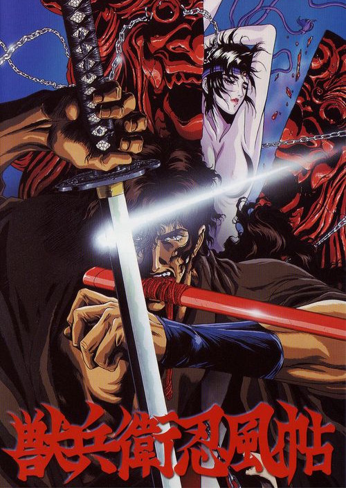

| Ninja Scroll | |
|---|---|
| Trailer | Original Poster |
|  | |
|
- Plot : The film takes place in feudal Japan and follows Kibagami Jubei,
a mercenary swordsman who battles the Eight Devils of Kimon, a team of ninjas with supernatural powers who are intent on overthrowing the Tokugawa shogunate. During his quest, he is aided by Dakuan, an elderly but crafty government spy, and Kagero, a Kōga kunoichi whose body is infused with poisonous toxins. - Japenese title : 獣兵衛忍風帖 - Genre : Fantasy - Directed by : Yoshiaki Kawajiri - Music by : Kaoru Wada (full OST > HERE) - Running time : 1h39m - Production : Madhouse animation studio / Toho Co., Ltd. - Release date : 5 June 1993 |
|